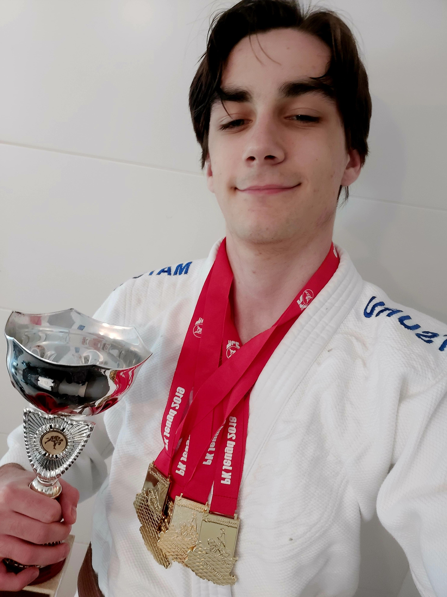
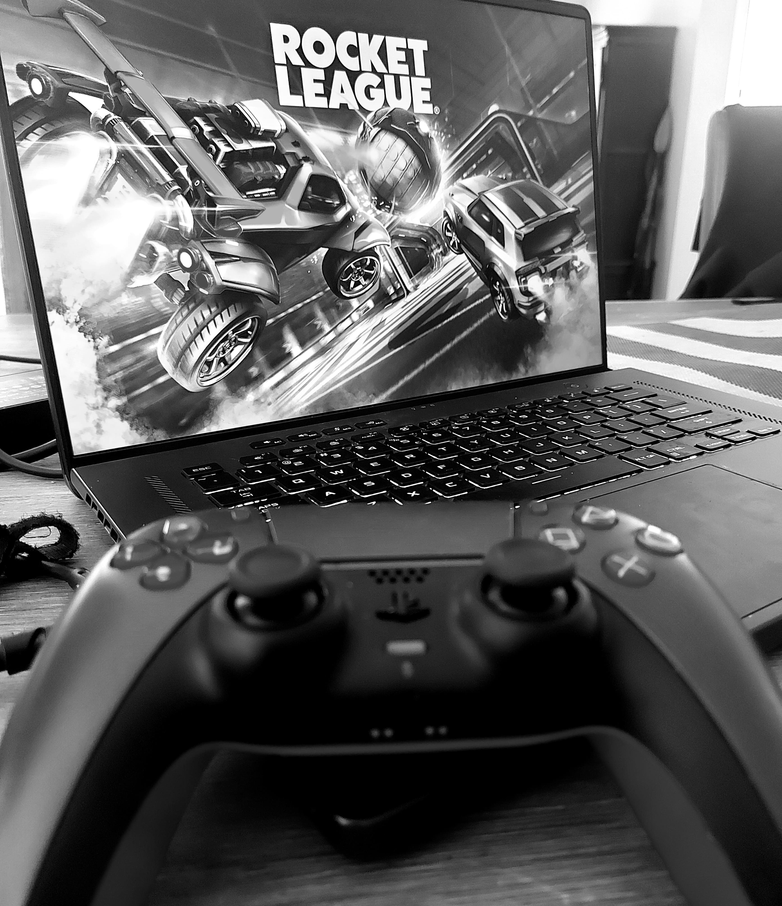
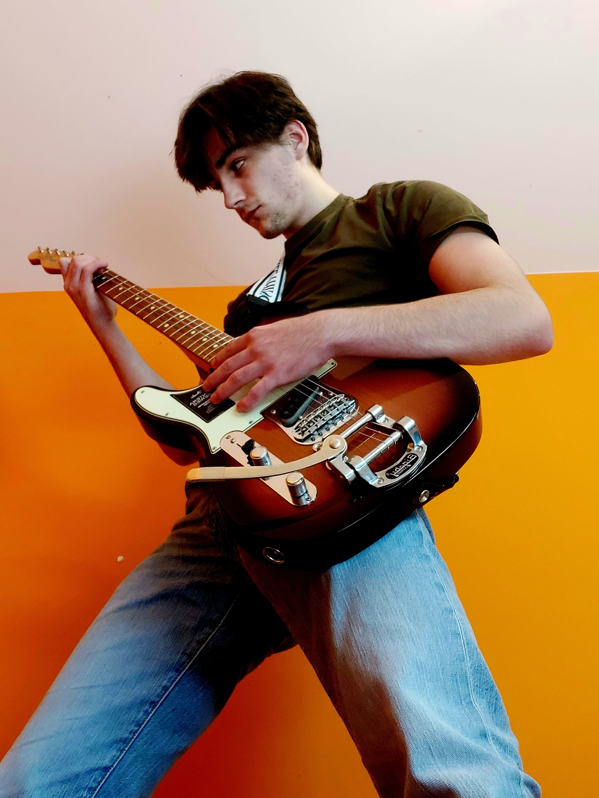

Sinds ik jong was heb ik altijd van sport gehouden. In de voetstappen van familie ben ik competitief judo gaan doen. Ik heb hard getraind, en veel gewonnen:
Nu heb ik een bruine band en ik help met lesgeven aan de volgende generatie. Ik ben nu nog veel bezig met sport. Ik ben erg bezig met mijn persoonlijke fitnessreis waar ik elke week hard naar mijn doelen streef.


Video-games is iets wat ik graag doe als ontspanning. Ik speel graag competitief, en ik neem het wel eens serieus, maar ik speel ook games voor de ervaring. Daarom ben ik ook geinteresseerd in het maken van games. Alhoewel ik enkel een amateur ben heb ik dus opleidingen gevolgd in Game development en 3D modelling
Ik hou van muziek. Als het kan luister ik graag naar muziek als ik bezig ben. Ik luister naar veel verschillende muziek, maar ben toch zeker een grote Hip-Hop fan. Ikzelf heb ook lang gitaar gespeeld en zelfs een diploma van de muziekschool in turnhout. Ik heb als student ook concerten gespeeld. Alhoewel ik er niet zo actief mee bezig ben, pak ik mijn gitaar af en toe terug vast.
